Пример выполнения работы с использованием программы для вёрстки сайтов
Попробуем выполнить вёрстку страницы показанной ниже с использованием программы для вёрстки сайтов
 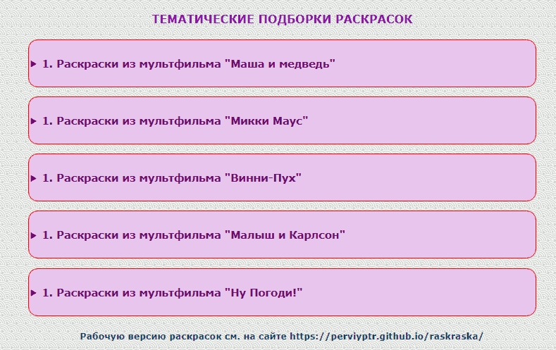
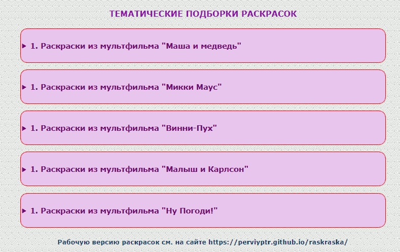
Создаём холст (кнопка "Создать холст"). Зададим ширину холста 1200px.
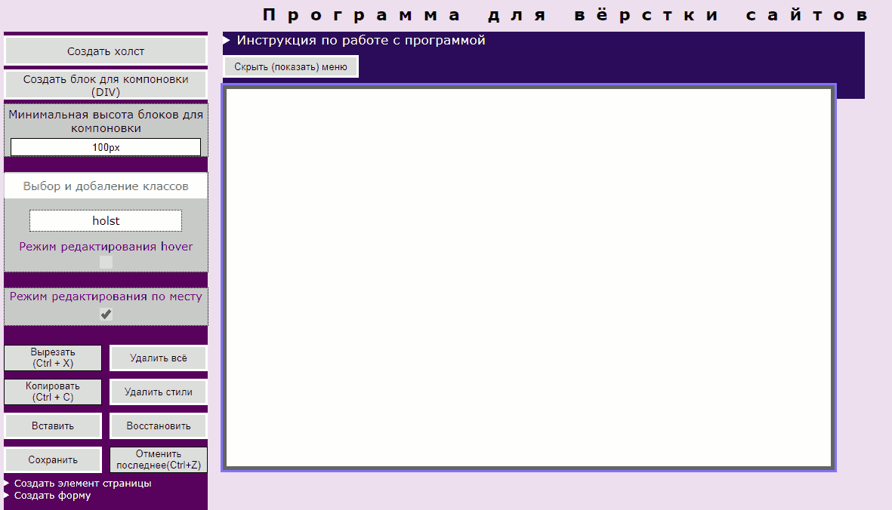
Создаём блок для компоновки (кнопка "Создать блок для компоновки") и задаём ему ширину 100%. Блоку присваивается по умолчанию класс "big-div", который высветится в верхней части меню.
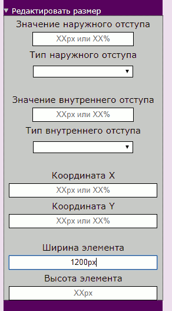
Вставим рисунок в созданный блок для компоновки. Для этого выделим блок, щёлкнув по нему и по сделаем щелчок по кнопке "Создать элемент страницы" — "Изображение". Введём SRC изображения.
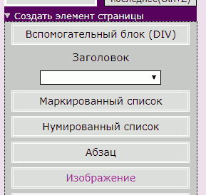
Зададим ширину рисунка 100%.Если результаты устраивают не забываем сохранять работу (кнопка "Сохранить").
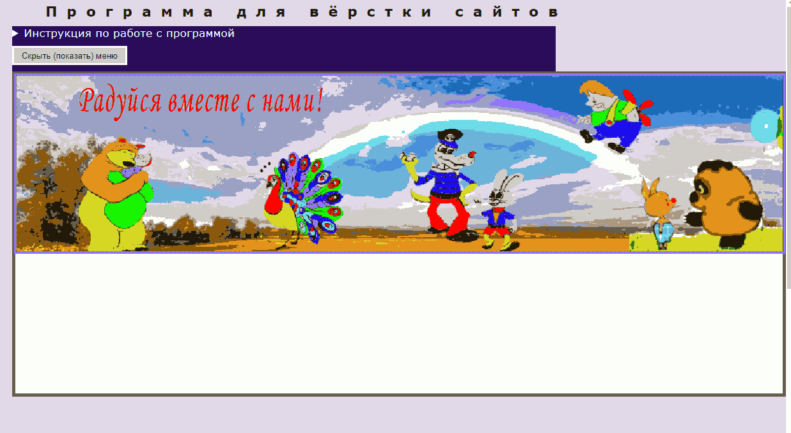
Создадим блок для компоновки, выделим его и вставим в него три вспомогательных блока для компоновки.
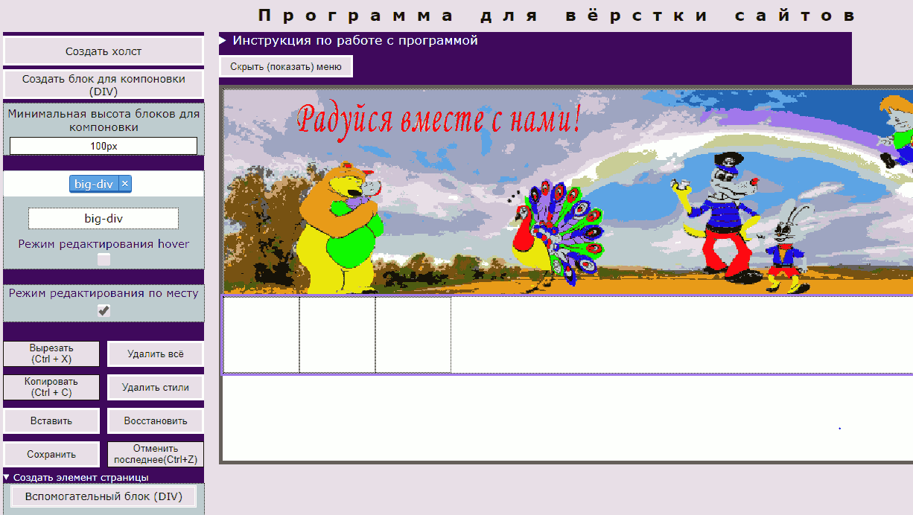
Зададим ширину боковым вспомогательным блокам 350px, центральному 500px.
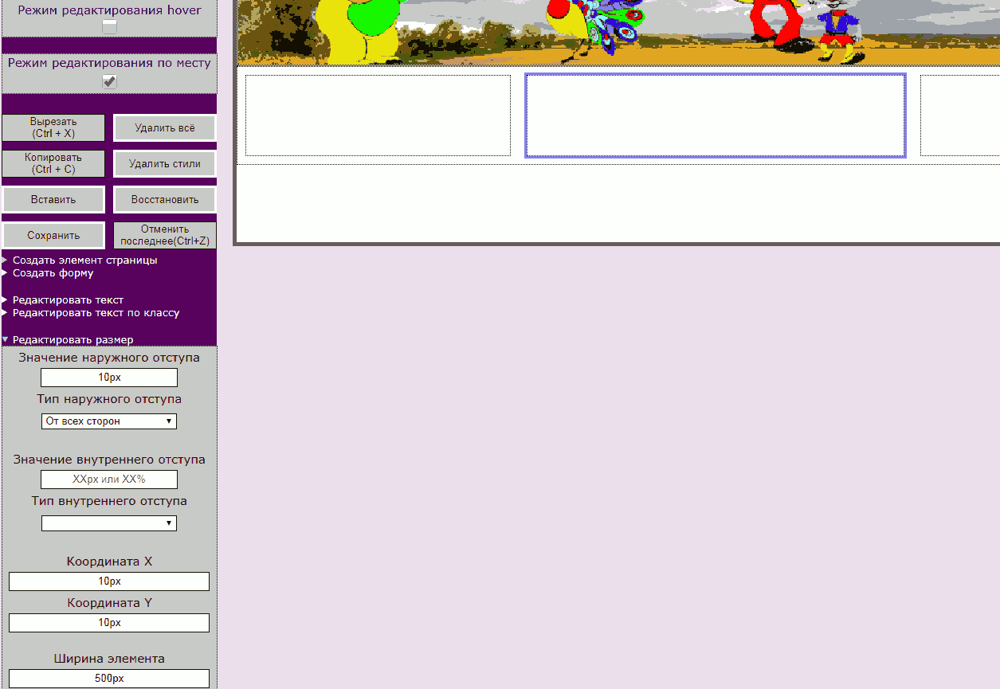
Создадим заголовок h2. Выделить средний блок и выбрать h2 в раскрывающемся списке "Заголовок".
Отредактируем стиль текста заголовка.
Создадим маркированный список ("Создать элемент страницы" — "Маркированный список").
Наберите текст первого пункта списка и нажмите "Enter". Будет создан следующий пункт. Для завершения создания списка надо сделать щелчок на другом элементе страницы.
Создадим вспомогательный блок для компоновки. Зададим ему ширину 100%.
Для создания картинки с надписью сверху выберем "Создать элемент страницы" — "Элемент с надписью сверху" и введём текст надписи.
Отредактируем размеры и стилевые свойства элемента.
Скопируем элемент и вставим его два раза в выделенный блок.
Выравниваем элементы по горизонтали с помощью Flex-Box. Выделить надо блок в который входят элементы
Вставляем рисунок в элемент. Выделять надо нижний квадрат.
Редактируем границу.
Создаём новый вспомогательный блок для компоновки. Задаём ему размеры 550px X 550px.
Выравниваем блок с использованием Flex-Box.
Вставим фоновую картинку ("Редактировать фон" — "Фон в виде картинки").
Редактируем границу.
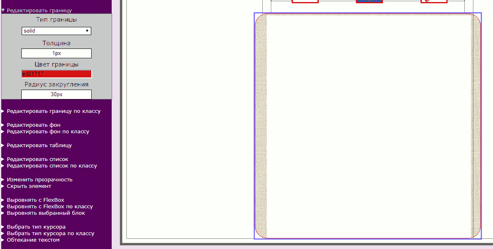
Создаём новый вспомогательный блок и задаём ему новый класс "dla_risunkov" (новое имя класса напечатать рядом с именем старого класса и нажать "Entrer").

Старый класс удаляем и делаем настройки по новому классу.

После настроек копируем и вставляем элемент несколько раз.
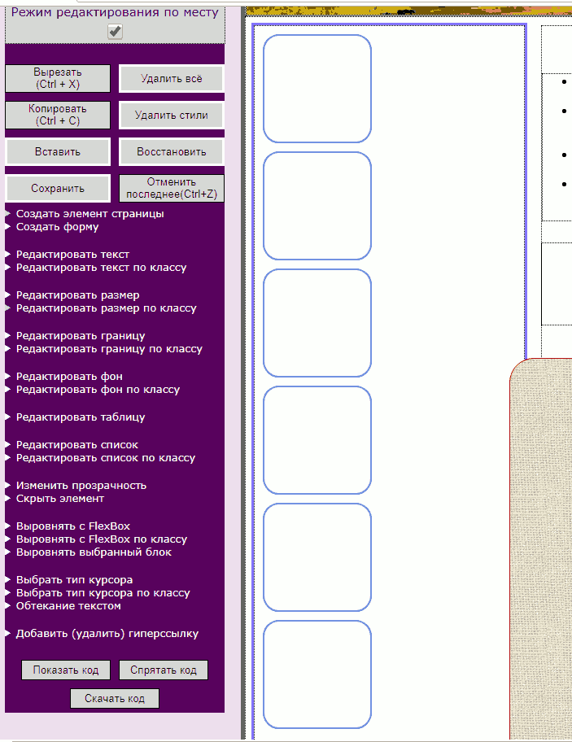
Выравниваем с помощью Flex-Box .
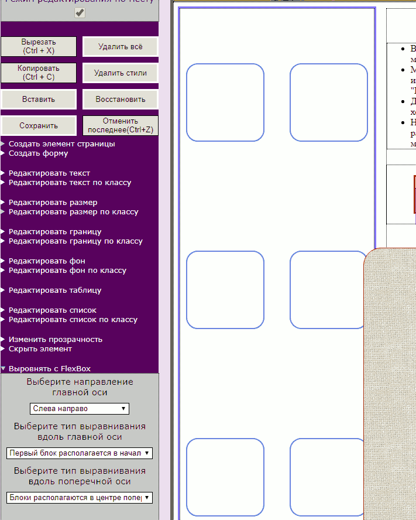
Повторяем для правого блока или копируем весь блок целиком .
Вставляем картинки.
Если надо создать блок для компоновки менее 100px надо изменить минимальный размер в окне "Минимальная высота блоков для компоновки".
Создаём ещё один блок для компоновки и вставляем подзаголовок. Изменим название и цвет шрифта.
Добавляем новые вспомогательные блоки, присваиваем им новый класс и редактируем.
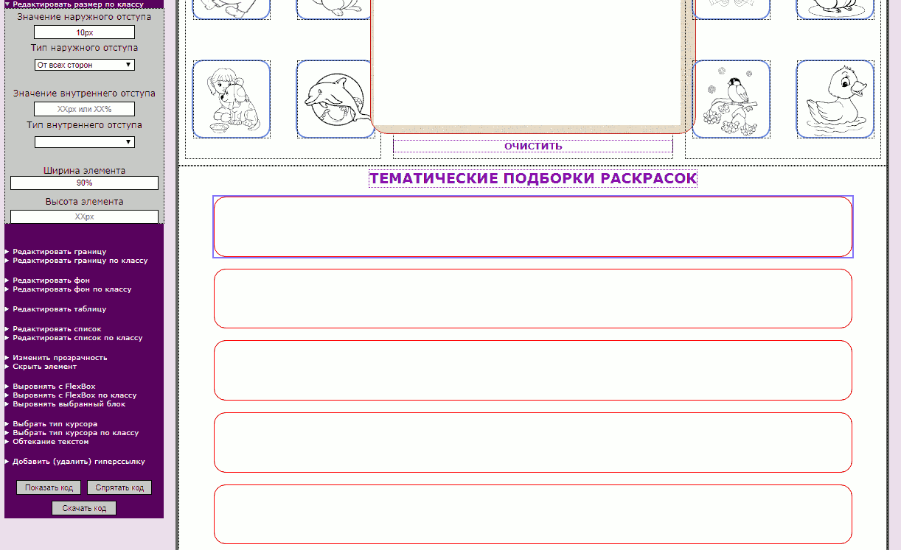
Вставляем "Раскрывающееся меню", вводим нужный текст при создании и редактируем стили.
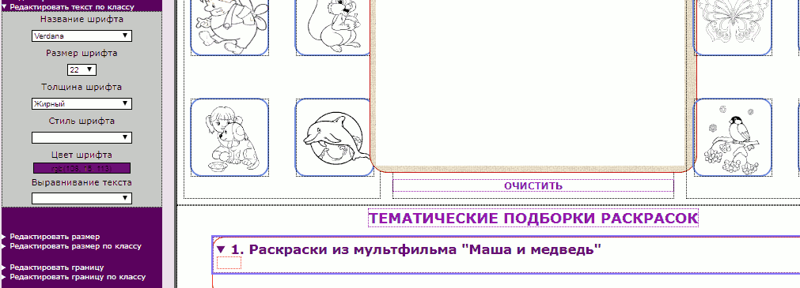
Добавляем в нижний блок раскрывающегося списка вспомогательный блок для компоновки, меняем его класс на "dla_risunkov", редактируем стили по классу и заполняем ими нижний блок раскрывающегося списка с последующим выравниванием с помощью Flex-Box.
Копируем раскрывающееся меню и вставляем во все блоки. Текст потом перебиваем на нужный.
Изменим фон элементов.
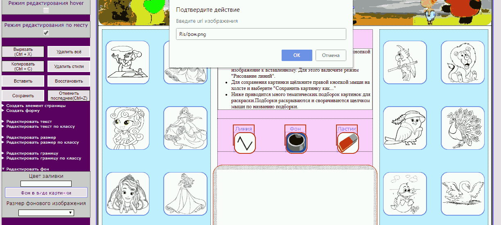
Для настройки эффектов при наведении мыши на элемент ("hover") поставим галочку на "Режим редактирования hover". После этого можно настроить все доступные в меню стили, которые возникнут при наведении мыши.
Добавим гиперссылку к нижней надписи. Для этого выделим надпись и введём адрес гиперссылки в текстовое поле. Для просмотра действия гиперссылки надо убрать галочку с "Режим редактирования по месту" (отключить).
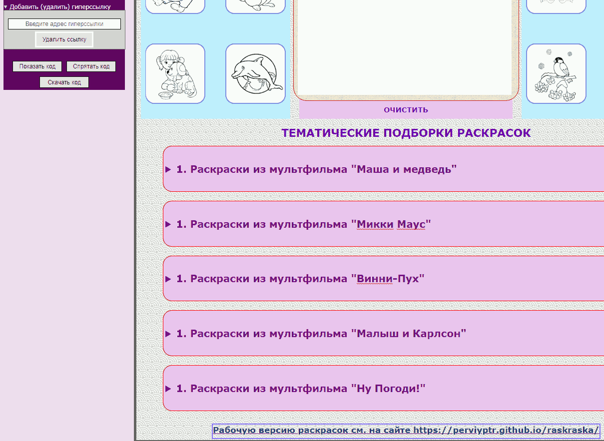